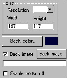
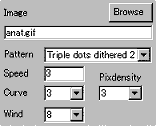

|
This applet visualises a lightened voxel landscape
in real time animation.
[For more technical
information about the available parameters, click here.]
Most parameters are self-explanatory and you can
always see brief description of each parameter by moving the mouse
pointer over the wizard.
 |
First of all, define the applet size and its resolution "Width",
"Height", and "Resolution".
Resolution works as a stretcher value for the internally calculated
image. If you want high quality result, set this to one.
|
|
Next, either set the "background image"
or "background colour."
Then you decide if textscroll function is
enabled by checking "Enable textscroll" box.
|
 |
Here you set an image to be waved. Next you
choose a render method from "Pattern" parameter.
We have provided 8 methods currently. "Pixdensity"
decides the distance in pixel between plotted points of a
flag.
|
Once you have chosen the render type, next you configure
the rest of the three parameters which affect how the flag waves.
"Wind" -- wind intensity; from
0 (no wind) to 8 (typhoon)
"Curve" - curve level of waving from 1 to 5 (biggest).
"Speed"- speed of waving.
Although I explained "Speed" parameter
was the speed of waving of the flag, it's not really precise. All
three parameters interact one after another and the result is always
rather complex. So, you need to experiment with these values by
yourself and find the most appropriate combination for your desired
effect.
Proceed to the textscroll
menu if you have checked the textscroll box; otherwise go to
the expert menu.
|